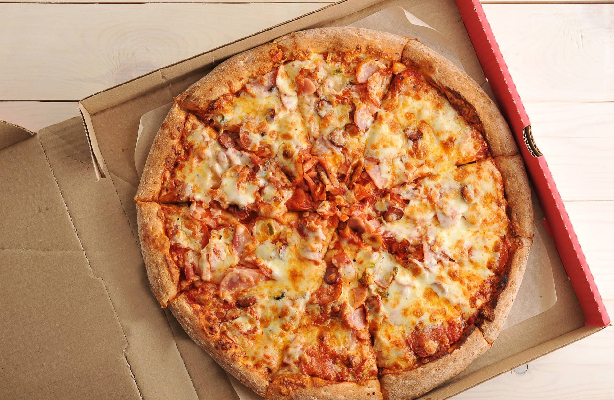

Web development is the process of creating, building, and maintaining websites and web applications. It involves everything from web design to programming and database management. Web development is generally divided into three core areas: Frontend Development, Backend Development, and Full Stack Development.
Food is any substance consumed by an organism for nutritional support. Food is usually of plant, animal, or fungal origin and contains essential nutrients such as carbohydrates, fats, proteins, vitamins, or minerals. The substance is ingested by an organism and assimilated by the organism's cells to provide energy, maintain life, or stimulate growth.
Pizza

Pizza is an Italian, specifically Neapolitan, dish typically consisting of a flat base of leavened wheat-based dough topped with tomato, cheese, and other ingredients, baked at a high temperature, traditionally in a wood-fired oven.Pizza
Pizza is an Italian, specifically Neapolitan, dish typically consisting of a flat base of leavened wheat-based dough topped with tomato, cheese, and other ingredients, baked at a high temperature, traditionally in a wood-fired oven.